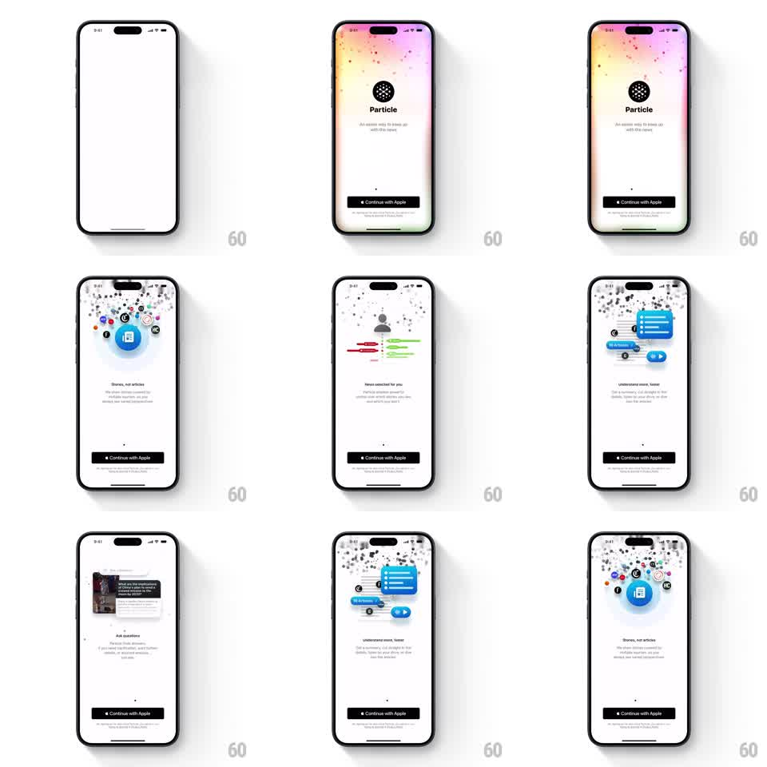

Media
Frame-by-frame

Rebuild this interaction 1:1: Particle's onboarding carousel - swipe-driven pages whose vector illustrations fluidly morph into each other over a living particle-dot background, with a fixed Continue with Apple button.

Rebuild this interaction 1:1: Particle's onboarding carousel - swipe-driven pages whose vector illustrations fluidly morph into each other over a living particle-dot background, with a fixed Continue with Apple button.
## Integration
Integration: stack-agnostic spec - springs given as stiffness/damping, timed motions as duration + curve; map every value to your framework and animation library of choice.
## Scene
White onboarding with a pink-yellow gradient glow washing the top edge. A field of small gray dots fills the upper half. Carousel pages: the Particle logo splash ("An easier way to keep up with the news"), "Stories, not articles" (blue newspaper icon orbited by floating publisher favicons), "News selected for you" (person icon with red/green preference bars), "Understand more, faster" (blue AI summary cards), and "Ask questions" (an article card with a question field). A black "Continue with Apple" button is pinned at the bottom with Terms/Privacy links; a page dot sits above it.
## Motion spec
Pattern: swipe carousel with morphing illustrations and a particle field that reacts to the drag.
- The dot field idles with a slow drift (each dot wanders +-8pt over 4-7s, randomized) and a subtle color shimmer near the gradient.
- Dragging horizontally: pages track the finger; the dot field flows with the drag (dots translate 0.3x the gesture with 50ms lag and spring back, ~260/20).
- Illustration morph: as one page leaves, its icon elements scatter into dots (scale down + fade, 250ms, staggered 20ms) while the next page's illustration assembles from dots (scale 0.5 -> 1 spring ~300/16, staggered 25ms) - the two overlap so the particles read as continuous matter.
- The floating favicons around the newspaper icon orbit slowly (12s revolution) and bob (+-4pt, 2s, phase-offset).
- Copy blocks crossfade with a 100ms lag behind the illustration swap.
- The page dot indicator slides (spring ~300/22) and the active dot stretches (width 8pt -> 18pt).
## Calibration
- Morphs read as transformation, not page slides: the illustration swap leads, the background dots follow.
- Keep the dot field under ~120 dots for 60fps.
## Reduced motion
Simple page crossfade (250ms); static dot field.
## Don't miss
- The Continue with Apple button never moves - only the content above it morphs.
- The gradient glow stays constant across pages; it is atmosphere, not a page element.